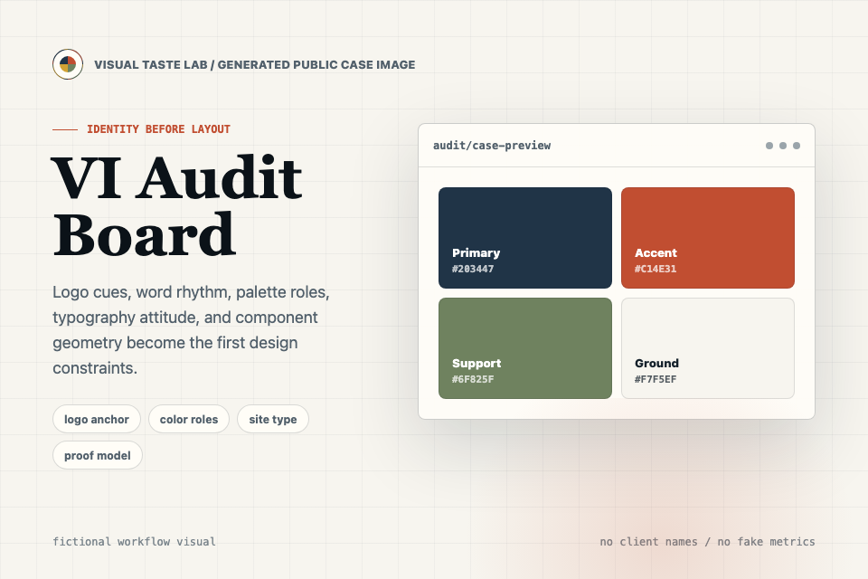
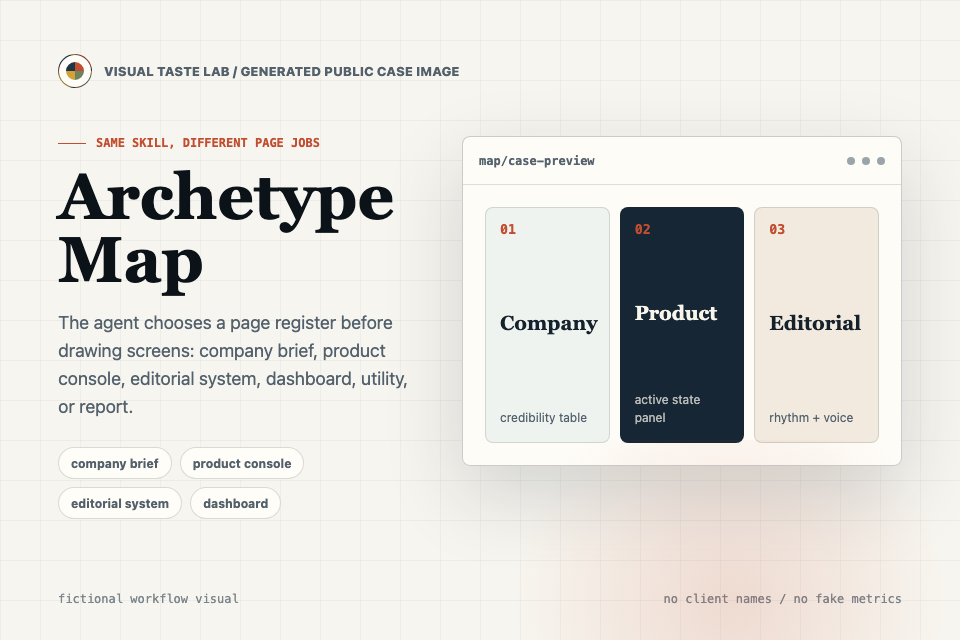
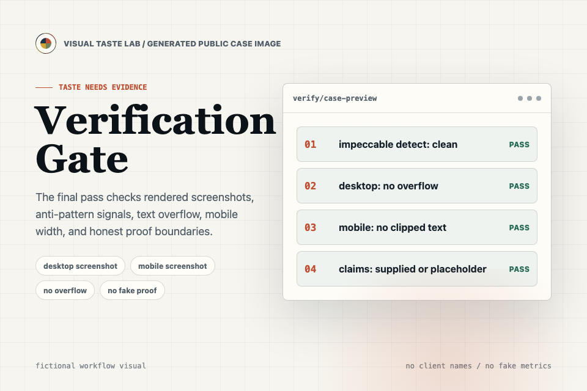
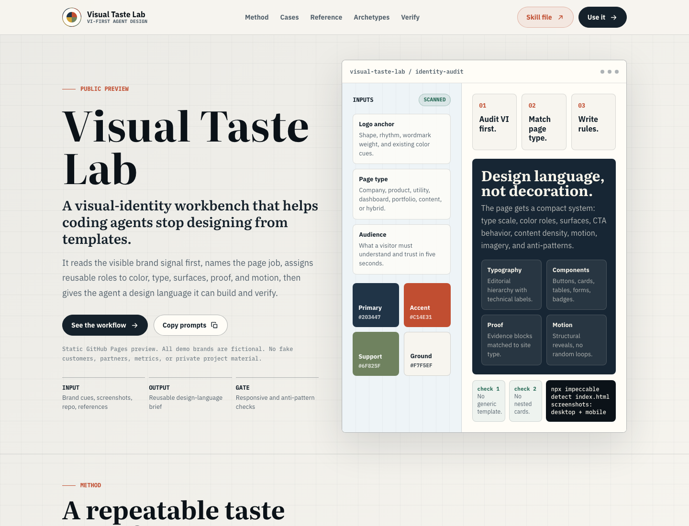
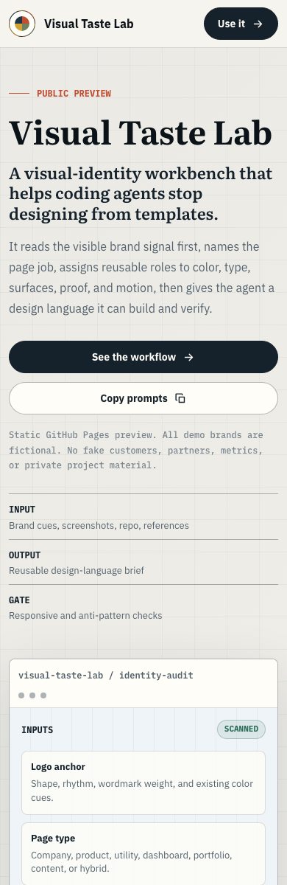

Public preview
Visual Taste Lab
A visual-identity workbench that helps coding agents stop designing from templates.
It reads the visible brand signal first, names the page job, assigns reusable roles to color, type, surfaces, proof, and motion, then gives the agent a design language it can build and verify.
Static GitHub Pages preview. All demo brands are fictional. No fake customers, partners, metrics, or private project material.
InputBrand cues, screenshots, repo, references
OutputReusable design-language brief
GateResponsive and anti-pattern checks
Design language, not decoration.
The page gets a compact system: type scale, color roles, surfaces, CTA behavior, content density, motion, imagery, and anti-patterns.
- TypographyEditorial hierarchy with technical labels.
- ComponentsButtons, cards, tables, forms, badges.
- ProofEvidence blocks matched to site type.
- MotionStructural reveals, no random loops.
check 1No generic template.
check 2No nested cards.
npx impeccable detect index.html
screenshots: desktop + mobile
screenshots: desktop + mobile
Method
A repeatable taste workflow agents can actually follow.
Visual Taste Lab turns an open-ended request like "make this better" into a design sequence with explicit decisions and verifiable output.
Start with VI
Use the mark, word rhythm, existing palette, audience, and product category as the first constraints.
Name the site type
A company page, product page, utility, dashboard, and content brand should not share the same layout reflex.
Assign roles
Colors, type, spacing, surfaces, cards, tables, buttons, and CTAs get jobs before screen-level styling begins.
Verify the result
The final pass checks screenshots, overflow, hierarchy, anti-patterns, claim honesty, and repeated component rules.
Generated case images
Three visual examples, all fictional and workflow-led.
These generated images are public teaching assets. They show how Visual Taste Lab talks about VI audit, page archetypes, and verification without pretending to have real clients, metrics, or case studies.

Case image 01
VI Audit Board
Turns logo cues, palette roles, type attitude, and component geometry into the first design constraints.

Case image 02
Archetype Map
Shows why a company brief, product console, editorial system, dashboard, and utility need different page shapes.

Case image 03
Verification Gate
Makes screenshot checks, anti-pattern detection, mobile layout, and honest proof boundaries part of the visual workflow.
Reference study
What this project learns from stronger design tooling.
The useful lesson is not a palette or typeface. It is the product shape: make the method visible, teach against anti-patterns, show before-and-after thinking, and keep verification close to the interface.
Borrow the discipline. Keep the identity.
Visual Taste Lab should feel like a serious workbench for design-language decisions, not a copy of another brand. The page keeps its own warm technical editorial identity while adopting a sharper product narrative.
Productize
Explain the skill as a working system with inputs, outputs, commands, and checks.
Teach
Name visual mistakes directly: generic hero shapes, random accents, overbuilt cards, and unsupported claims.
Prove
Use archetype previews and public screenshots instead of vague "premium" language.
Verify
Make responsive screenshots and deterministic checks part of the story, not a hidden final step.
Archetypes
Same workflow, different page jobs.
A useful design skill should adapt its page shape. These public examples are fictional and intentionally small, so the visual rules stay legible.
Company brief
Credibility before conversion.
For B2B, professional services, and institutional pages that need calm proof and clear contact paths.
ProofStatus tables, milestones, partner-safe language
AvoidVague future claims and loud template effects
Product console
Fast comprehension, then action.
For developer tools, dashboards, utilities, and product pages where the interface behavior must be obvious.
ProofCode blocks, config panels, state rows
AvoidUnreadable terminal decoration and equal CTAs
Editorial system
Fewer modules, stronger memory.
For portfolios, content brands, reports, and design-led pages where typography and rhythm carry the identity.
ProofEssays, visual sequences, source notes
AvoidDashboard density and generic card grids
Verify
The public preview should pass its own taste check.
The preview assets are static screenshots generated from this page. They are part of the repo contract: desktop and mobile should remain readable, non-empty, and free of horizontal overflow.


Execution
From reference to committed UI, without guessing.
This is the implementation loop the skill asks agents to follow inside a real project.
Read the project before choosing style.
Collect current pages, assets, typography, colors, content structure, and the strongest brand cues.
Write the design language.
Document decisions about tokens, page patterns, components, imagery, motion, and forbidden visual moves.
Apply system-first.
Update shared surfaces, navigation, buttons, cards, lists, and CTAs before isolated page polish.
Run visual and technical checks.
Use screenshots, overflow checks, build checks, and anti-pattern detection as the final acceptance gate.
Use the skill
Give your agent a brief it can build from.
Paste this into a coding-agent session with the Visual Taste Lab skill installed. Add screenshots, links, brand notes, and required pages when you have them.
/goal Use $visual-taste-lab to improve this project visually.
First distill a reusable design language from the repo, screenshots, links, references, and brand context. Do not redesign immediately.
Start with a VI audit:
- logo or wordmark
- primary, support, accent, neutral, and semantic colors
- site type and audience
- typography, spacing, surfaces, components, CTA rules, motion, imagery, and anti-patterns
Then apply the design language to the key pages/components.
Constraints:
- do not invent fake customers, metrics, partners, or quotes
- do not delete unrelated files
- keep mobile clean with no horizontal overflow
- run build/tests and screenshot checks when applicable
- summarize changed files and remaining content/assets needed